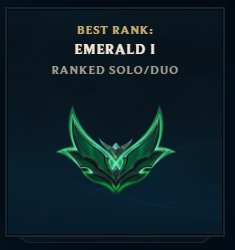
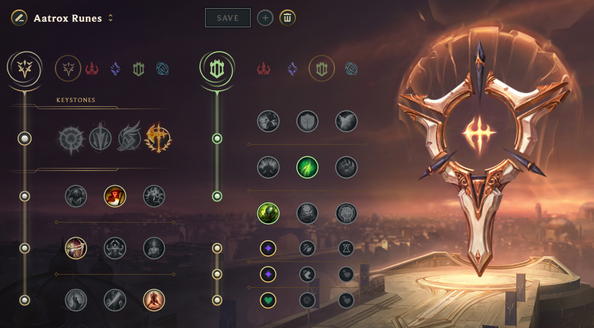

Guide on the Basics of playing Aatrox
Welcome to my guide on how to play Aatrox in the Top Lane
I have been playing League of Legends since 2020 and have played top this entire time
im not too pround of my rank but the highest rank I have reach Is Emerald One -87lp

A quick intro to what is League of Legends. League of Legends is a online MOBA game that launched in 2009 the game is primarily played on PC. The average monthly players of over 50million players around the world
The game takes place in an arena named Summoners rift, the game breaks down into 5 distince roles Top,Jungle,Mid,Bot and Support each with their own responsibliltes but we will be focusing on the top lane role.
More specially we will be focusing on the Champaion Aatrox. Aatrox is classified into the fighter class

The first thing the you should know when playing aatrox is knowing which runes to take
Aatrox will almost always use the Percison tree as his Primary Tree with Resolve Tree as his Secondary
Conqueror
- Triumph
- Alacrity
- Last Stand
Resolve
- Overgrowth
- Second Wind
Your rune page should look like the following image

At the start of every League of Legends game every player is given 500 gold to by items, as a Top laner this a heavily dependent on your match up
You can either buy Dorans blade or Dorans sheild. Generally Aatrox should always take Dorans blade because he is a fighter
With that you have a quick and simple guide on how to play aatrox in the top lane
good luck and I will see you on the Rift